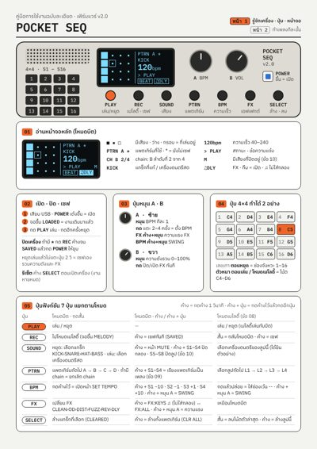
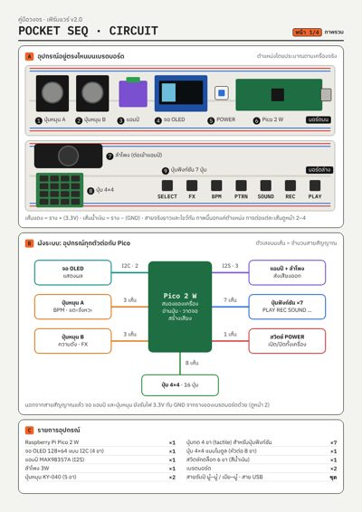
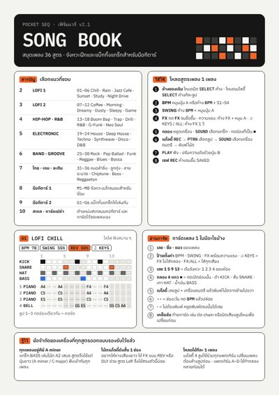
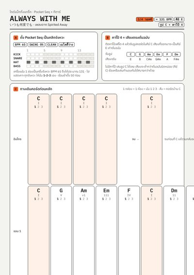
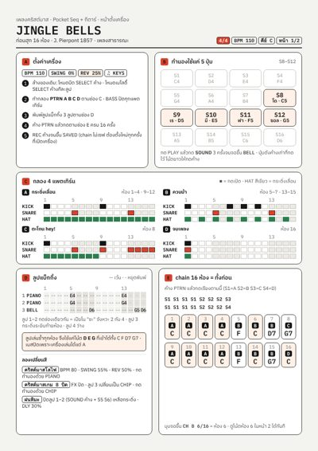
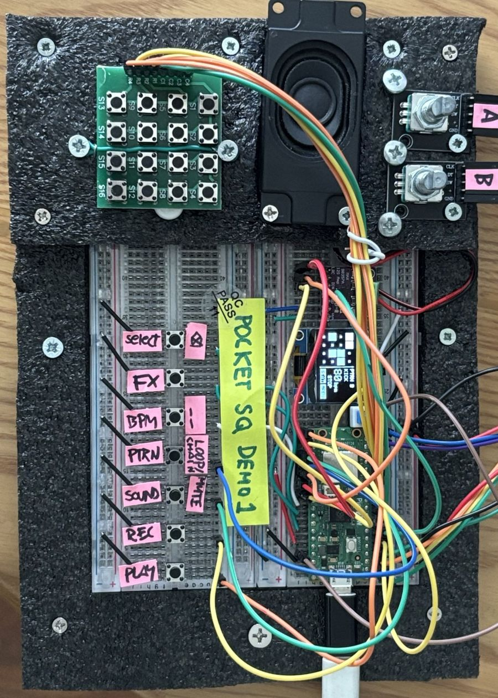
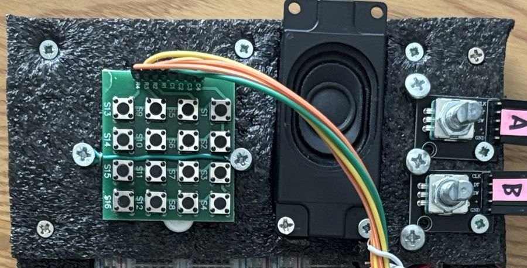
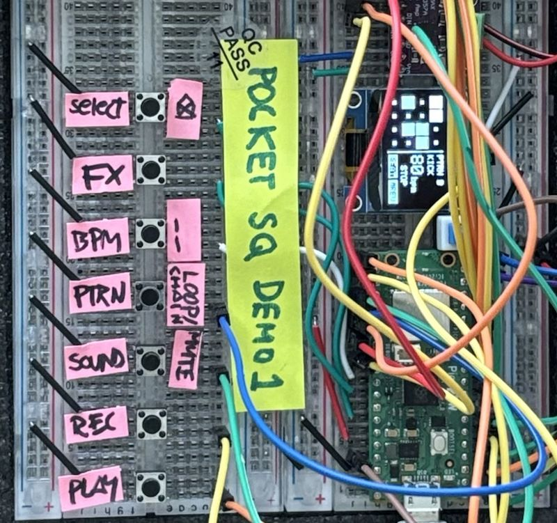

คู่มือใช้งานปุ่ม หน้าจอ ทำบีต เมโลดี้ chain FX · 5 หน้า
ดาวน์โหลด PDF 430 KB
ติดตั้งเป็นแอปบน Mac: ใน Chrome กดไอคอนติดตั้งท้ายช่องที่อยู่ (หรือเมนู ⋮ → Cast, save and share → Install page as app) จะได้ไอคอนไว้เปิดจาก Dock
ไฟล์อัดจากเสียงก่อนปรับความดังลำโพง หรี่ลำโพงตอนอัดได้ไฟล์ก็ยังดังเท่าเดิม · 22,050 Hz โมโน ประมาณ 2.6 MB ต่อนาที
ไฟล์ PDF ขนาด A4 พิมพ์ได้เลย · เฟิร์มแวร์เปิดด้วย Arduino IDE





LOADED = งานเดิมกลับมาแล้วSAVEDคีย์ขาวของเปียโนเรียงจากโดกลาง (C4) · ถ้าติดตั้งแผงปุ่มหมุนไปด้านข้าง ให้นับ S1 จากมุมที่มีเลข 1 บนแผง
ทั้ง 4 ลูปเล่นพร้อมกัน และใช้ร่วมกันทุกแพตเทิร์น
มุมจอบอก CH A 1/4 · chain ไม่เซฟ ปิดเครื่องแล้วหาย
CLN เสียงปกติOD แตกนุ่มDIST แตกหนักFUZZ แตกโบราณREV ก้องDLY สะท้อนSWING ค้าง BPM + หมุน APIANO เปียโนPLUCK ดีดสายMARIMBA ไม้เคาะBELL ระฆังCHIP เกม 8 บิตSYNTH ซินธ์ลากยาวLEAD ซินธ์โซโลBRASS แตรORGAN ออร์แกนFLUTE ขลุ่ยLOADED โหลดงานที่เซฟไว้SAVED เซฟเรียบร้อยCLEARED ล้างแทร็กแล้วCLR ALL ล้างแพตเทิร์นแล้วFULL 16/16 ลูปเต็มแล้วREST · DEL ใส่เว้น · ลบแล้วUSB REC กำลังอัดผ่านสายถอดสาย กดปุ่ม BOOTSEL บน Pico ค้างไว้แล้วเสียบสายใหม่ · บน Mac ถ้ามีหน้าต่างถามให้กด Allow (หรือ System Settings → Privacy & Security → Allow accessories to connect)
เฟิร์มแวร์ v2.1 ขึ้นไปแก้แล้ว · ถ้ายังเป็น ปิดแล้วเปิดสวิตช์ POWER ใหม่ 1 ครั้ง
เครื่องเซฟความดัง BPM และ FX ตอนหยุดเล่นแล้วไม่แตะปุ่ม 2 วินาที · ถ้าปิดเครื่องทันทีหลังปรับ ให้กด REC ค้างจนขึ้น SAVED ก่อน
ตั้งใจให้เป็นแบบนั้น chain ไม่ถูกเซฟ ต้องตั้งใหม่ทุกครั้ง (ค้าง PTRN + S1–S4)
เช็กว่าอัปโหลดเฟิร์มแวร์ v2.2 แล้ว และปิด Serial Monitor ใน Arduino IDE เพราะใช้สายพร้อมกันไม่ได้ · ใช้ Chrome หรือ Edge บนคอมเท่านั้น
กด SELECT ค้างไว้ตอนเปิดเครื่อง · งานที่เซฟไว้จะหายหมด
Pocket Seq คือเครื่องทำบีตและเมโลดี้ขนาดเล็ก ประกอบบน breadboard สองแผ่น ทุกปุ่ม ทุกหน้าจอ และทุกหน้าคู่มือ ออกแบบโดยคนที่เริ่มหัดอิเล็กทรอนิกส์จากศูนย์

เราเป็นนักออกแบบกราฟิก ไม่ใช่วิศวกร งานประจำคือสอนและทำงานออกแบบ แต่เครื่องดนตรีพกพาเล็ก ๆ อย่าง Pocket Operator คือแรงบันดาลใจ ทุกครั้งที่กดมันก็สงสัยว่า ข้างในทำงานยังไง แล้วถ้าลองสร้างเองล่ะ
คำถามนั้นพาไปสู่การหัดเขียนภาษา C หัดต่อวงจร และเรียนรู้ว่าเสียงหนึ่งเสียงต้องคำนวณกี่หมื่นครั้งต่อวินาที เริ่มจากปุ่มกับเสียงง่าย ๆ ทีละอย่าง จนกลายเป็นเครื่องที่ทำบีต เล่นเมโลดี้ใส่เอฟเฟกต์ และอัดเพลงออกมาเป็นไฟล์ได้
ทุกอย่างยังอยู่บน breadboard สายไฟยังพันกันยุ่ง ป้ายปุ่มยังเป็นกระดาษสีชมพูเขียนมือ เพราะนี่คือต้นแบบที่ตั้งใจให้แก้ไขได้ตลอด ทุกเวอร์ชันเกิดจากการลองเล่นจริงแล้วเจอสิ่งที่อยากให้ดีขึ้น
เริ่มจากประสบการณ์การใช้ ปุ่มไหนกดบ่อยต้องอยู่ใกล้มือ จอ 128×64 จุดต้องอ่านออกในหนึ่งวินาที คู่มือต้องเปิดแล้วทำตามได้ทันที
ใช้ชิ้นส่วนหาง่าย ต่อบน breadboard มองเห็นทุกเส้นทางของสัญญาณ อยากเพิ่มปุ่มหรือเปลี่ยนเสียงก็แก้ได้ ไม่มีกล่องดำ
มีสูตรเพลงพร้อมใช้ เมโทรนอม และแบ็กกิ้งแทร็กสำหรับฝึกกีตาร์ ไม่ต้องรู้ทฤษฎีมากก็ทำเพลงแรกได้


ไอเดียที่คิดไว้ ยังไม่ได้ทำ
ไม่ต้อง คนสร้างเครื่องนี้เองก็เริ่มจากศูนย์ คู่มือวงจรบอกทุกเส้นสายว่าต่อจากไหนไปไหน
ได้ ดาวน์โหลดเฟิร์มแวร์ได้ในแท็บ คู่มือ แล้วอัปโหลดผ่าน Arduino IDE
แท็บทำดนตรีและคู่มือใช้บนมือถือได้ ส่วนแท็บอัดเสียงต้องใช้ Chrome หรือ Edge บนคอมพิวเตอร์ เพราะต้องต่อสาย USB
ใกล้เคียง เว็บจำลองวิธีสร้างเสียงแบบเดียวกับเครื่อง แต่ไม่เหมือน 100% ใช้ลองฟังก่อนพิมพ์สูตรลงเครื่อง
เริ่มจากคู่มือวงจร ต่อทีละชิ้นตามผัง แล้วอัปโหลดเฟิร์มแวร์ เครื่องของคุณจะเล่นทุกเพลงในเว็บนี้ได้เหมือนกัน
Pocket Seq · ใช้กับเฟิร์มแวร์ v2.2 ขึ้นไป · ไฟล์เสียงอยู่ในเครื่องคุณเท่านั้น ไม่ถูกส่งขึ้นเน็ต